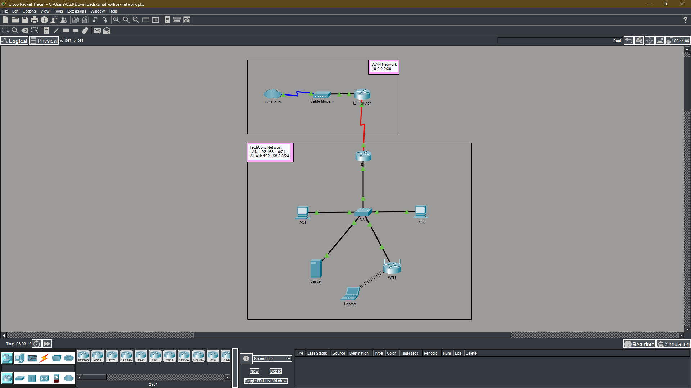
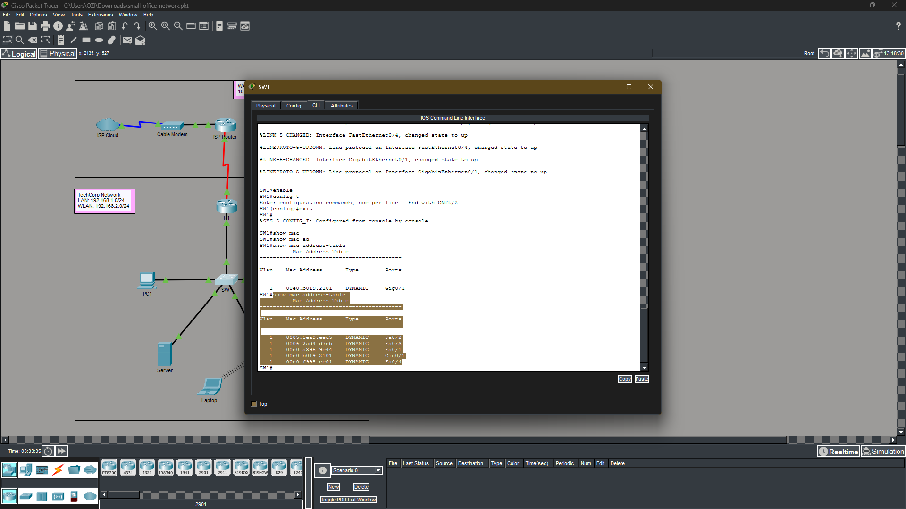
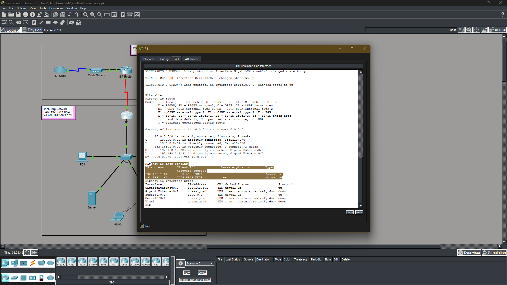
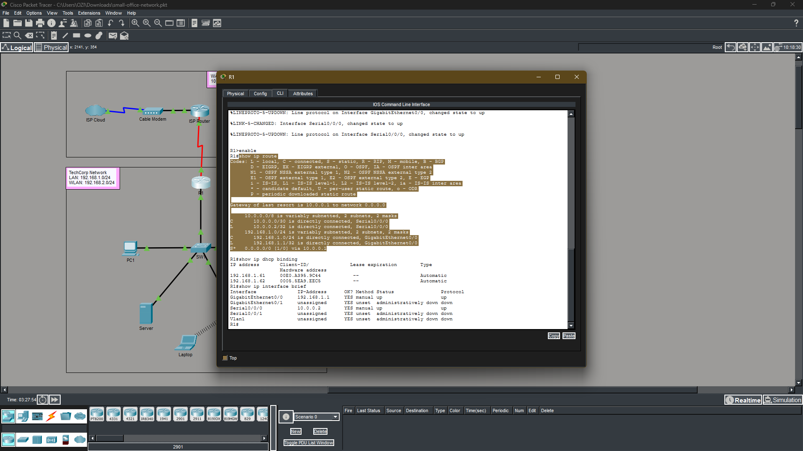
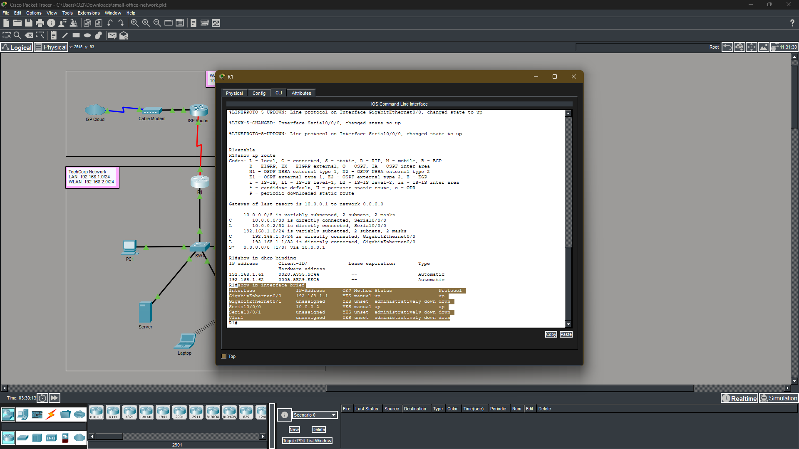
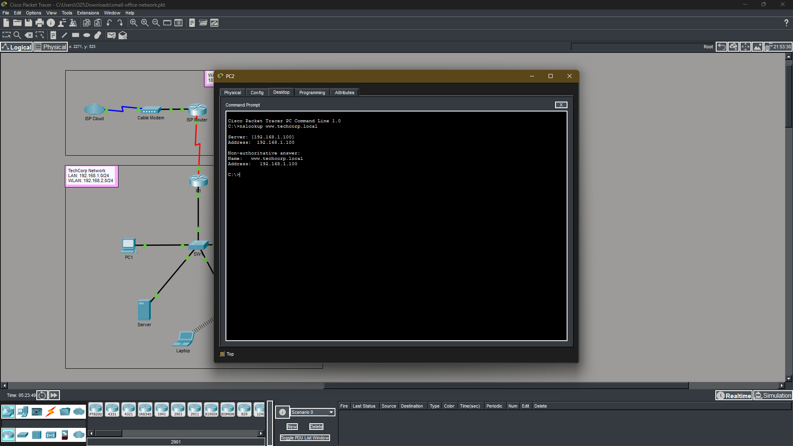
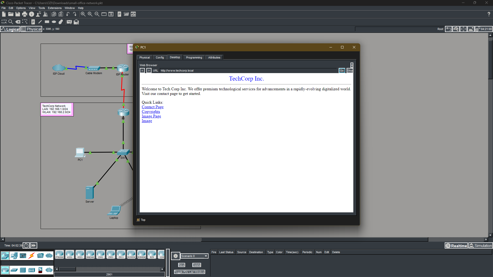
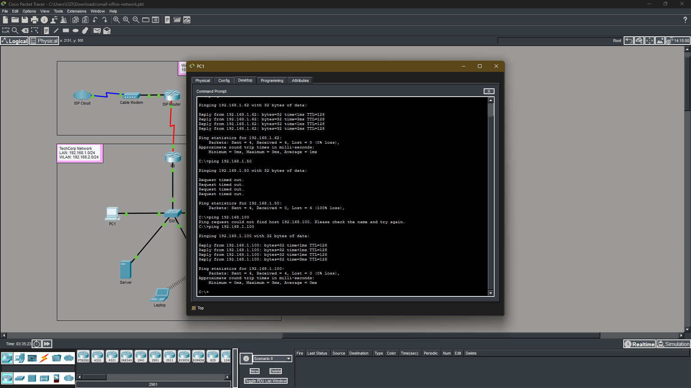

cat objectives.txt
cat tools.txt
| TOOL / TECHNOLOGY | PURPOSE |
|---|
cat skills.txt
cat topology.txt
[ISP Cloud: 8.8.8.1]
|
[ISP Router: 10.0.0.1] ----------- WAN: 10.0.0.0/30
|
[R1: S0/0/0: 10.0.0.2 / G0/0: 192.168.1.1]
|
[SW1: 192.168.1.2]
/ | | \
[PC1] [PC2] [Server] [WR1: 192.168.1.50]
DHCP DHCP .100 |
[Laptop: 192.168.2.x DHCP via WR1]
LAN: 192.168.1.0/24
WLAN: 192.168.2.0/24
WAN: 10.0.0.0/30
| DEVICE | INTERFACE | IP ADDRESS | ROLE |
|---|---|---|---|
| R1 | G0/0 | 192.168.1.1 | LAN gateway / DHCP server |
| R1 | S0/0/0 | 10.0.0.2 | WAN uplink to ISP |
| ISP | S0/0/1 | 10.0.0.1 | Simulated ISP router |
| ISP | G0/0 | 8.8.8.1 | Simulated internet |
| SW1 | VLAN 1 | 192.168.1.2 | Access layer switch |
| Server | NIC | 192.168.1.100 | DNS and HTTP server |
| WR1 | LAN | 192.168.1.50 | Wireless access point |
| PC1 | NIC | DHCP (.61) | Wired workstation |
| PC2 | NIC | DHCP (.62) | Wired workstation |
| Laptop | Wireless | DHCP (192.168.2.x) | Wireless client |
cat lab_parts.txt
cat results.txt
ls ./evidence/

Fig 1 - Full TechCorp topology in Packet Tracer
Fig 2 - SW1 MAC address table
Fig 3 - show ip dhcp binding on R1
Fig 4 - show ip route on R1
Fig 5 - show ip interface brief on R1
Fig 6 - nslookup verification
Fig 7 - HTTP Access Verification
Fig 8 - Full Network Verificationcat lessons_learned.txt